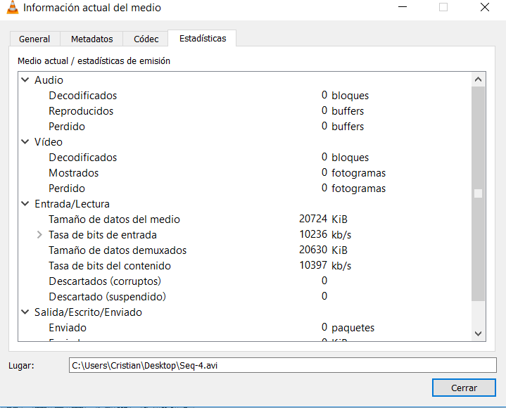

<!DOCTYPE HTML PUBLIC "-//W3C//DTD HTML 4.0 Transitional//EN">
<HTML>
<HEAD>
	<META HTTP-EQUIV="CONTENT-TYPE" CONTENT="text/html; charset=utf-8">
	<TITLE>pLATAFORMAS DE DISTRIBUCIÓN DE CONTENIDOS</TITLE>
	<META NAME="GENERATOR" CONTENT="LibreOffice 4.1.6.2 (Linux)">
	<META NAME="AUTHOR" CONTENT="Cristian González Fernández – 71730037Y">
	<META NAME="CREATED" CONTENT="20180305;160400000000000">
	<META NAME="CHANGEDBY" CONTENT="Cristian">
	<META NAME="CHANGED" CONTENT="20180412;160400000000000">
	<META NAME="CLASSIFICATION" CONTENT="PEC 2">
	<META NAME="AppVersion" CONTENT="16.0000">
	<META NAME="DocSecurity" CONTENT="0">
	<META NAME="HyperlinksChanged" CONTENT="false">
	<META NAME="LinksUpToDate" CONTENT="false">
	<META NAME="ScaleCrop" CONTENT="false">
	<META NAME="ShareDoc" CONTENT="false">
	<STYLE TYPE="text/css">
	<!--
		@page { margin-left: 1.18in; margin-right: 1.18in; margin-top: 0.49in; margin-bottom: 0.49in }
		@page:first { margin-top: 0.98in; margin-bottom: 0.49in }
		P { margin-bottom: 0.08in; direction: ltr; widows: 2; orphans: 2 }
		A:link { color: #828282; so-language: zxx }
		A.sdfootnoteanc { font-size: 57% }
	-->
	</STYLE>
</HEAD>
<BODY LANG="es-ES" LINK="#828282" DIR="LTR">
<P STYLE="margin-bottom: 0.11in"><SPAN CLASS="sd-abs-pos" STYLE="position: absolute; top: 0in; left: 0in; width: 768px"></SPAN><SPAN DIR="LTR" STYLE="position: absolute; top: 0in; left: 0in; width: 8in; height: 1in; border: none; padding-top: 0in; padding-bottom: 0in; padding-left: 1.75in; padding-right: 0.75in; background: #ffffff">
	<P ALIGN=RIGHT STYLE="margin-bottom: 0in; line-height: 100%"><FONT COLOR="#595959"><FONT SIZE=4>Cristian
	González Fernández – 71730037Y</FONT></FONT></P>
	<P ALIGN=CENTER STYLE="margin-bottom: 0in; line-height: 100%"><FONT COLOR="#595959">
	    </FONT>
	</P>
</SPAN>
<SPAN DIR="LTR" STYLE="position: absolute; top: 0in; left: 0in; width: 8in; height: 1.1in; border: none; padding-top: 0in; padding-bottom: 0in; padding-left: 1.75in; padding-right: 0.75in; background: #ffffff">
	<P ALIGN=CENTER STYLE="margin-bottom: 0in; line-height: 100%"><BR>
	</P>
	<P ALIGN=RIGHT STYLE="margin-bottom: 0in; line-height: 100%"><FONT COLOR="#595959">
	    </FONT>
	</P>
</SPAN>
<SPAN DIR="LTR" STYLE="position: absolute; top: 0in; left: 0in; width: 8in; height: 3.98in; border: none; padding-top: 0in; padding-bottom: 0in; padding-left: 1.75in; padding-right: 0.75in; background: #ffffff">
	<P ALIGN=RIGHT STYLE="margin-bottom: 0.11in"><SPAN STYLE="text-transform: uppercase"><FONT COLOR="#4d1434"><FONT SIZE=7 STYLE="font-size: 32pt">pLATAFORMAS
	DE DISTRIBUCIÓN DE CONTENIDOS</FONT></FONT></SPAN></P>
	<P ALIGN=RIGHT STYLE="margin-bottom: 0.11in"><FONT COLOR="#404040"><FONT SIZE=5>PEC
	2</FONT></FONT></P>
</SPAN><BR><BR>
<P STYLE="margin-bottom: 0.11in"><BR><BR>
</P>
<P STYLE="margin-bottom: 0.11in"><BR><BR>
</P>
<P STYLE="margin-bottom: 0.11in"><BR><BR>
</P>
<P STYLE="margin-bottom: 0.11in"><BR><BR>
</P>
</P>
<P STYLE="margin-bottom: 0.11in"><BR><BR>
</P>
<P STYLE="margin-bottom: 0in; line-height: 100%; page-break-before: always">
<FONT COLOR="#000000"><FONT FACE="Calibri, serif"><FONT SIZE=3><FONT COLOR="#1f497c"><FONT FACE="Calibri-Bold, serif"><FONT SIZE=4 STYLE="font-size: 13pt"><B>Ejercicio
1: Clip de vídeo incrustado en HTML 5</B></FONT></FONT></FONT></FONT></FONT></FONT></P>
<P STYLE="margin-bottom: 0in; line-height: 100%"><BR>
</P>
<P ALIGN=JUSTIFY STYLE="margin-bottom: 0in; line-height: 100%"><FONT COLOR="#000000"><FONT FACE="Calibri, serif"><FONT SIZE=3><FONT COLOR="#1f497c"><FONT FACE="Calibri-Bold, serif"><FONT SIZE=3 STYLE="font-size: 11pt"><B>Tarea
1.1</B></FONT></FONT></FONT> <FONT SIZE=2 STYLE="font-size: 10pt"><B>Elige
un clip de vídeo de máximo 30 segundos (puedes crearlo con tu
dispositivo móvil, que tenga objetos en detalle y en movimiento) y
codifícalo con Avidemux eligiendo el formato y resolución que creas
adecuadas para su publicación en web. Teniendo en cuenta que no
todos los navegadores aceptan todos los códecs, codifica el vídeo
en los formatos necesarios para que sea compatible con el máximo de
navegadores posible. Explica las decisiones tomadas en la
codificación y el porqué de cada una.</B></FONT></FONT></FONT></FONT></P>
<P ALIGN=JUSTIFY STYLE="margin-bottom: 0in; line-height: 100%"><BR>
</P>
<P ALIGN=JUSTIFY STYLE="text-indent: 0.25in; margin-bottom: 0in; line-height: 100%">
<FONT COLOR="#000000"><FONT FACE="Calibri, serif"><FONT SIZE=3><FONT SIZE=2 STYLE="font-size: 10pt">Analizando
la compatibilidad de los diferentes códecs con la gran cantidad de
navegadores existentes<A CLASS="sdfootnoteanc" NAME="sdfootnote1anc" HREF="#sdfootnote1sym"><SUP>1</SUP></A>,
han sido necesarias varias consideraciones de cara a elegir los
formatos necesarios:</FONT></FONT></FONT></FONT></P>
<P ALIGN=JUSTIFY STYLE="margin-bottom: 0in; line-height: 100%"><BR>
</P>
<UL>
	<LI><P ALIGN=JUSTIFY STYLE="margin-bottom: 0in; line-height: 100%"><FONT COLOR="#000000"><FONT FACE="Calibri, serif"><FONT SIZE=3><FONT SIZE=2 STYLE="font-size: 10pt">Ha
	sido imposible obtener un único formato que permita la reproducción
	de vídeo en todos los navegadores y que, al mismo tiempo, sea
	adecuado para utilizar vía web</FONT></FONT></FONT></FONT></P>
	<LI><P ALIGN=JUSTIFY STYLE="margin-bottom: 0in; line-height: 100%"><FONT COLOR="#000000"><FONT FACE="Calibri, serif"><FONT SIZE=3><FONT SIZE=2 STYLE="font-size: 10pt">De
	entre todos los códecs, se ha priorizado la relación
	calidad/tamaño tras analizar, </FONT><FONT SIZE=2 STYLE="font-size: 10pt"><I>grosso
	modo</I></FONT><FONT SIZE=2 STYLE="font-size: 10pt">, la
	compatibilidad general dentro del mercado de los navegadores</FONT></FONT></FONT></FONT></P>
	<LI><P ALIGN=JUSTIFY STYLE="margin-bottom: 0in; line-height: 100%"><FONT COLOR="#000000"><FONT FACE="Calibri, serif"><FONT SIZE=3><FONT SIZE=2 STYLE="font-size: 10pt">Entre
	todos los formatos de vídeo, se ha elegido como primer códec a
	utilizar H264. Con él se consigue realizar una cobertura de
	navegadores que llega hasta el 94,97%</FONT></FONT></FONT></FONT></P>
	<LI><P ALIGN=JUSTIFY STYLE="margin-bottom: 0in; line-height: 100%"><FONT COLOR="#000000"><FONT FACE="Calibri, serif"><FONT SIZE=3><FONT SIZE=2 STYLE="font-size: 10pt">En
	segundo lugar, dado que en ocasiones es necesario tener instalado
	Microsoft’s Media Future Pack para poder reproducir un vídeo en
	dicho formato, se ha optado por el formato desarrollado por Google,
	webm. Este formato se ha elegido en segundo lugar dado que se
	solventa la necesidad del software indicado anteriormente en
	navegadores como Mozilla Firefox o Microsoft Edge. Además de esto
	último, este formato presenta un interés creciente por parte de
	los desarrolladores de navegadores web, por lo que, cada vez más
	navegadores intentan soportar el mismo</FONT></FONT></FONT></FONT></P>
	<LI><P ALIGN=JUSTIFY STYLE="margin-bottom: 0in; line-height: 100%"><FONT COLOR="#000000"><FONT FACE="Calibri, serif"><FONT SIZE=3><FONT SIZE=2 STYLE="font-size: 10pt">De
	cara al sonido, se ha tenido en cuenta la utilización de .mp3 dada
	su extensión y compatibilidad. No obstante, se ha descartado su uso
	ya que, mediante el códec AAC, se pueden conseguir niveles de
	compresión muy buenos (poco espacio ocupado con una gran relación
	de calidad de sonido) debido a que, incluso en la calidad más baja,
	48 kbps, solo existe una pérdida del 7% de calidad con respecto a
	una calidad de 128 kbps. Es decir, pese a su compresión, este
	formato permite obtener una relación calidad/tamaño muy buena. Por
	otro lado, dado que se ha contemplado la utilización de webm, ha
	sido útil la búsqueda de otra codificación para el sonido de cara
	a conseguir dos códecs similares (que cubran en la mayor medida los
	mismos navegadores para que no existan limitaciones simplemente por
	haber elegido mal la codificación de vídeo o de sonido). De esta
	manera, he realizado un vídeo cuya codificación de sonido es
	Vorbis (como decía anteriormente, por su compatibilidad con webm)</FONT></FONT></FONT></FONT></P>
</UL>
<P ALIGN=JUSTIFY STYLE="margin-left: 0.5in; margin-bottom: 0in; line-height: 100%">
<BR>
</P>
<P ALIGN=JUSTIFY STYLE="text-indent: 0.25in; margin-bottom: 0in; line-height: 100%">
<FONT COLOR="#000000"><FONT FACE="Calibri, serif"><FONT SIZE=3><FONT SIZE=2 STYLE="font-size: 10pt">Por
lo tanto, en la web se expone un vídeo que puede estar en H264 o en
webm en caso de que el primero no sea soportado por el navegador.
Como códec de sonido, tal y como se ha explicado, se hace uso del
AAC (H264) y de Vorbis (webm)</FONT></FONT></FONT></FONT></P>
<P ALIGN=JUSTIFY STYLE="margin-bottom: 0in; line-height: 100%"><BR>
</P>
<P ALIGN=JUSTIFY STYLE="margin-bottom: 0in; line-height: 100%"><FONT COLOR="#1f497c"><FONT FACE="Calibri-Bold, serif"><FONT SIZE=3 STYLE="font-size: 11pt"><B>Tarea
1.2 </B></FONT></FONT></FONT><FONT COLOR="#000000"><FONT FACE="Calibri, serif"><FONT SIZE=2 STYLE="font-size: 10pt"><B>Crea
la web. Genera un fichero .html mediante un editor de texto,
incrústale el clip de vídeo codificado utilizando el tag </B></FONT></FONT></FONT><FONT COLOR="#000000"><FONT FACE="Courier New, serif"><FONT SIZE=2 STYLE="font-size: 10pt"><B>&lt;video&gt;
</B></FONT></FONT></FONT><FONT COLOR="#000000"><FONT FACE="Calibri, serif"><FONT SIZE=2 STYLE="font-size: 10pt"><B>de
HTML5 y prepara la web para que pueda ser visualizada desde la
mayoría de los navegadores. ¿Qué características se pueden
destacar de la publicación y visualización de este vídeo sobre una
web?</B></FONT></FONT></FONT></P>
<P ALIGN=JUSTIFY STYLE="margin-bottom: 0in; line-height: 100%"><BR>
</P>
<P ALIGN=JUSTIFY STYLE="text-indent: 0.49in; margin-bottom: 0in; line-height: 100%">
<FONT COLOR="#000000"><FONT FACE="Calibri, serif"><FONT SIZE=2 STYLE="font-size: 10pt">Para
la reproducción de video, se ha hecho uso de la etiqueta </FONT></FONT></FONT><FONT COLOR="#000000"><FONT FACE="Consolas, serif"><FONT SIZE=2 STYLE="font-size: 10pt">&lt;video&gt;
</FONT></FONT></FONT><FONT COLOR="#000000"><FONT FACE="Calibri, serif"><FONT SIZE=2 STYLE="font-size: 10pt">disponible
en HTML5. Este tag, permite la especificación de varios formatos,
indicados por orden, de cara a conseguir (en base al estudio indicado
en el ejercicio anterior) una reproducción segura casi al 100% (si
el formato indicado en una determinada posición no se puede
reproducir, se pasa al siguiente y así, sucesivamente).  Además,
dentro de dicha etiqueta, se permite la especificación de un mensaje
de error que se muestra en caso de que ninguno de los formatos
indicados en la lista no es capaz de reproducirse. A continuación,
se muestra el uso del tag indicado:</FONT></FONT></FONT></P>
<P ALIGN=JUSTIFY STYLE="text-indent: 0.49in; margin-bottom: 0in; line-height: 100%">
<BR>
</P>
<P ALIGN=CENTER STYLE="text-indent: 0.49in; margin-bottom: 0in; line-height: 100%">
</P>
<P ALIGN=CENTER STYLE="text-indent: 0.49in; margin-bottom: 0in; line-height: 100%">
<BR>
</P>
<P ALIGN=JUSTIFY STYLE="text-indent: 0.49in; margin-bottom: 0in; line-height: 100%">
<FONT COLOR="#000000"><FONT FACE="Calibri, serif"><FONT SIZE=2 STYLE="font-size: 10pt">El
primero de los vídeos es un contenedor que recoge vídeo en H264 y
sonido en AAC. El segundo de los vídeos se encuentra dentro de otro
contenedor diferente, manteniendo unas imágenes webm y un sonido
Vorbis.</FONT></FONT></FONT></P>

<video width="640" height="480" controls>
  <source src="ejercicio1.2.mp4" type="video/mp4">
  <source src="ejercicio1.2.webm" type="video/webm">
	Your browser does not support the video tag.
</video>
<P ALIGN=JUSTIFY STYLE="margin-bottom: 0in; line-height: 100%"><BR>
</P>
<P ALIGN=JUSTIFY STYLE="margin-bottom: 0in; line-height: 100%"><FONT COLOR="#1f497c"><FONT FACE="Calibri-Bold, serif"><FONT SIZE=3 STYLE="font-size: 11pt"><B>Tarea
1.3 </B></FONT></FONT></FONT><FONT COLOR="#000000"><FONT FACE="Calibri, serif"><FONT SIZE=2 STYLE="font-size: 10pt"><B>Publica
el fichero .html y el vídeo en un servidor web para verla con una
dirección http pública y vuelve a analizar sus características. Si
no tienes ningún servidor web, puedes utilizar cualquier de los
hostings gratuitos que existen en Internet.</B></FONT></FONT></FONT></P>
<P STYLE="margin-bottom: 0in; line-height: 100%"><BR>
</P>
<P STYLE="margin-bottom: 0in; line-height: 100%"><FONT COLOR="#000000"><FONT FACE="Calibri, serif"><FONT SIZE=2 STYLE="font-size: 10pt">En
la siguiente url se puede visualizar el fichero .html junto con los
vídeos configurados como se ha explicado anteriormente y, en base al
análisis detallo en este documento: </FONT></FONT></FONT>
</P>
<P STYLE="margin-bottom: 0in; line-height: 100%"><BR>
</P>
<UL>
	<LI><P STYLE="margin-bottom: 0in; line-height: 100%"><A HREF="https://cristiangonzalezfernandez.github.io/PEC2_UOC/index.html"><FONT FACE="Calibri, serif"><FONT SIZE=2 STYLE="font-size: 10pt"><I>https://cristiangonzalezfernandez.github.io/PEC2_UOC/index.html</I></FONT></FONT></A></P>
</UL>
<P STYLE="margin-bottom: 0in; line-height: 100%"><BR>
</P>
<P ALIGN=JUSTIFY STYLE="text-indent: 0.25in; margin-bottom: 0in; line-height: 100%">
<FONT FACE="Calibri, serif">Tal y como se había estudiado, la teoría
expuesta hasta este momento se ve aplicada de manera que, entrando a
esa URL se ha podido acceder y visualizar el vídeo sin ningún
problema desde los principales navegadores: Google Chrome, Internet
Explorer, Microsoft Edge, Firefox Mozilla, Opera, Safari…</FONT></P>
<P ALIGN=JUSTIFY STYLE="text-indent: 0.25in; margin-bottom: 0in; line-height: 100%">
<BR>
</P>
<P STYLE="margin-bottom: 0in; line-height: 100%"><BR>
</P>
<P STYLE="margin-bottom: 0in; line-height: 100%"><FONT COLOR="#000000"><FONT FACE="Calibri, serif"><FONT SIZE=3><FONT COLOR="#1f497c"><FONT FACE="Calibri-Bold, serif"><FONT SIZE=4 STYLE="font-size: 13pt"><B>3:
VISUALIZAR EL STREAM DE AUDIO Y VIDEO</B></FONT></FONT></FONT></FONT></FONT></FONT></P>
<P STYLE="margin-bottom: 0in; line-height: 100%"><BR>
</P>
<P ALIGN=JUSTIFY STYLE="text-indent: 0.49in; margin-bottom: 0.11in"><FONT FACE="Calibri, serif">Para
la realización de los siguientes ejercicios ha sido necesaria una
configuración de VLC (emisor y receptor) que no se incluye en este
documento dado que en el guion de la PEC2 queda claramente detallado
y simplemente serviría para alargar este documento con información
redundante.</FONT></P>
<P ALIGN=JUSTIFY STYLE="text-indent: 0.49in; margin-bottom: 0.11in"><FONT COLOR="#1f497c"><FONT FACE="Calibri-Bold, serif"><FONT SIZE=3 STYLE="font-size: 11pt"><B>Tarea
2.1</B></FONT></FONT></FONT> <FONT FACE="Calibri, serif"><FONT SIZE=2 STYLE="font-size: 10pt">en
el </FONT></FONT><FONT FACE="Calibri-Bold, serif"><FONT SIZE=2 STYLE="font-size: 10pt"><B>VLC
de emisión</B></FONT></FONT><FONT FACE="Calibri, serif"><FONT SIZE=2 STYLE="font-size: 10pt">,
menú </FONT></FONT><FONT FACE="Courier New, serif"><FONT SIZE=2 STYLE="font-size: 10pt">HERRAMIENTAS-INFORMACIÓN
DEL CÓDEC-CÓDEC </FONT></FONT><FONT FACE="Calibri, serif"><FONT SIZE=2 STYLE="font-size: 10pt">(en
Mac: </FONT></FONT><FONT FACE="Courier New, serif"><FONT SIZE=2 STYLE="font-size: 10pt">VENTANA-INFORMACIÓN
MULTIMEDIA-DETALLES DEL CÓDEC</FONT></FONT><FONT FACE="Calibri, serif"><FONT SIZE=2 STYLE="font-size: 10pt">),
indica los códecs con los cuales se generó el fichero almacenado.
En </FONT></FONT><FONT FACE="Courier New, serif"><FONT SIZE=2 STYLE="font-size: 10pt">ESTADÍSTICAS
</FONT></FONT><FONT FACE="Calibri, serif"><FONT SIZE=2 STYLE="font-size: 10pt">indica
la </FONT></FONT><FONT FACE="Courier New, serif"><FONT SIZE=2 STYLE="font-size: 10pt">TASA
DE BITS DE CONTENIDO </FONT></FONT><FONT FACE="Calibri, serif"><FONT SIZE=2 STYLE="font-size: 10pt">que
está leyendo de disco, es la necesaria para una reproducción
correcta del contenido (es un valor cambiante, de forma que toma un
valor mediano aproximado).</FONT></FONT></P>
<P ALIGN=JUSTIFY STYLE="text-indent: 0.49in; margin-bottom: 0.11in"><BR><BR>
</P>
<P ALIGN=CENTER STYLE="margin-bottom: 0.11in"></P>
<P ALIGN=CENTER STYLE="margin-bottom: 0.11in"><FONT FACE="Courier New, serif"><FONT SIZE=2 STYLE="font-size: 10pt"><B>INFORMACIÓN
DEL CÓDEC-CÓDEC (EMISOR)</B></FONT></FONT></P>
<P ALIGN=CENTER STYLE="margin-bottom: 0.11in"></P>
<P ALIGN=CENTER STYLE="margin-bottom: 0.11in"><FONT FACE="Courier New, serif"><FONT SIZE=2 STYLE="font-size: 10pt"><B>TASA
DE BITS DEL CONTENIDO (EMISOR)</B></FONT></FONT></P>
<P ALIGN=JUSTIFY STYLE="margin-bottom: 0in; line-height: 100%"><FONT COLOR="#1f497c"><FONT FACE="Calibri-Bold, serif"><FONT SIZE=3 STYLE="font-size: 11pt"><B>Tarea
2.2</B></FONT></FONT></FONT><FONT FACE="Calibri, serif"> </FONT><FONT FACE="Calibri, serif"><FONT SIZE=2 STYLE="font-size: 10pt">en
el </FONT></FONT><FONT FACE="Calibri-Bold, serif"><FONT SIZE=2 STYLE="font-size: 10pt"><B>VLC
de recepción</B></FONT></FONT><FONT FACE="Calibri, serif"><FONT SIZE=2 STYLE="font-size: 10pt">,
mediante </FONT></FONT><FONT FACE="Courier New, serif"><FONT SIZE=2 STYLE="font-size: 10pt">HERRAMIENTAS-INFORMACION
DEL CODEC-CÓDEC </FONT></FONT><FONT FACE="Calibri, serif"><FONT SIZE=2 STYLE="font-size: 10pt">(en
Mac: </FONT></FONT><FONT FACE="Courier New, serif"><FONT SIZE=2 STYLE="font-size: 10pt">VENTANA-INFORMACIÓN
MULTIMEDIA-DETALLES DEL CÓDEC</FONT></FONT><FONT FACE="Calibri, serif"><FONT SIZE=2 STYLE="font-size: 10pt">)
confirma que el stream está codificado en los formatos de vídeo y
audio seleccionados. En </FONT></FONT><FONT FACE="Courier New, serif"><FONT SIZE=2 STYLE="font-size: 10pt">ESTADÍSTICAS
</FONT></FONT><FONT FACE="Calibri, serif"><FONT SIZE=2 STYLE="font-size: 10pt">indica
la </FONT></FONT><FONT FACE="Courier New, serif"><FONT SIZE=2 STYLE="font-size: 10pt">TASA
DE BITS DE CONTENIDO </FONT></FONT><FONT FACE="Calibri, serif"><FONT SIZE=2 STYLE="font-size: 10pt">a
la cual está llegando el stream (toma un valor medio aproximado).</FONT></FONT></P>
<P ALIGN=CENTER STYLE="margin-bottom: 0.11in"></P>
<P ALIGN=CENTER STYLE="margin-bottom: 0.11in"><FONT FACE="Courier New, serif"><FONT SIZE=2 STYLE="font-size: 10pt"><B>DETALLES
DEL CÓDEC (RECEPTOR)</B></FONT></FONT></P>
<P STYLE="margin-bottom: 0.11in"></P>
<P ALIGN=CENTER STYLE="margin-bottom: 0.11in"><FONT FACE="Courier New, serif"><FONT SIZE=2 STYLE="font-size: 10pt"><B>TASA
DE BITS DE CONTENIDO (RECEPTOR)</B></FONT></FONT></P>
<P STYLE="margin-bottom: 0in; line-height: 100%"><FONT COLOR="#1f497c"><FONT FACE="Calibri-Bold, serif"><FONT SIZE=3 STYLE="font-size: 11pt"><B>Tarea
2.3 </B></FONT></FONT></FONT><FONT FACE="Calibri, serif"><FONT SIZE=2 STYLE="font-size: 10pt"><B>si
realizas una pausa en el VLC emisor, ¿cuántos según tarda en
pausarse el vídeo en el receptor? ¿Por qué? Vuélvelo a poner en
reproducción.</B></FONT></FONT></P>
<P STYLE="margin-bottom: 0in; line-height: 100%"><BR>
</P>
<P ALIGN=JUSTIFY STYLE="text-indent: 0.49in; margin-bottom: 0.11in"><FONT FACE="Calibri, serif">El
vídeo tarda en pausarse un tiempo aproximado de 1.5 segundos. Esto
es debido a que, en la configuración del receptor, cuando se hace
uso de la opción “abrir ubicación de red” se está aceptando
por defecto una caché (buffer) de tamaño 1000 ms, como se puede ver
a continuación:</FONT></P>
<P ALIGN=CENTER STYLE="margin-bottom: 0.11in"></P>
<P ALIGN=CENTER STYLE="margin-bottom: 0.11in"><FONT FACE="Courier New, serif"><FONT SIZE=2 STYLE="font-size: 10pt"><B>CONFIGURACIÓN
DEL TIEMPO DE RESPUESTA EMISOR-RECEPTOR</B></FONT></FONT></P>
<P ALIGN=JUSTIFY STYLE="text-indent: 0.49in; margin-bottom: 0.11in"><FONT FACE="Calibri, serif">Con
esta idea en mente, debemos tener en cuenta que pueden existir
tiempos de ejecución de procesos de configuración y de inicio del
servicio del receptor que provoquen “ruidos” en las tomas de
tiempo (existe un buffer de 1000 ms y sin embargo el vídeo tarda
1500 ms en pausarse). Para intentar disipar el ruido existente,
confirmando así la idea que se tiene en mente, se ha procedido a
realizar una configuración del receptor indicando un tamaño de
buffer de 7000ms. De esta forma, se ha confirmado que el tiempo que
tarda en pausarse el receptor es el que se indica en “Caché”.
Por ello, si variamos ese tamaño de caché, por ejemplo, a 7000 ms,
obtenemos un lapso de 7 segundos entre la pausa del emisor y la del
receptor.</FONT></P>
<P STYLE="margin-bottom: 0.11in"><BR><BR>
</P>
<P ALIGN=JUSTIFY STYLE="margin-bottom: 0in; line-height: 100%"><FONT COLOR="#1f497c"><FONT FACE="Calibri-Bold, serif"><FONT SIZE=3 STYLE="font-size: 11pt"><B>Tarea
2.4 </B></FONT></FONT></FONT><FONT FACE="Calibri, serif"><FONT SIZE=2 STYLE="font-size: 10pt"><B>Calcula
aproximadamente la compresión que el VLC de emisión está
realizando al transcodificar el fichero almacenado a stream en
formato H.264. Realiza una captura de pantalla del escritorio con los
dos VLC en marcha y sus ventanas con las estadísticas de cada uno
abiertas, e inserta la captura en el documento en el cual escribes
las respuestas de esta práctica.</B></FONT></FONT></P>
<P ALIGN=JUSTIFY STYLE="margin-bottom: 0in; line-height: 100%"><BR>
</P>
<P STYLE="margin-bottom: 0.11in"><FONT FACE="Calibri, serif">A
continuación, se muestra la captura requerida para responder,
posteriormente, al ejercicio:</FONT></P>
<P ALIGN=CENTER STYLE="margin-bottom: 0.11in"></P>
<P ALIGN=CENTER STYLE="margin-bottom: 0.11in"><FONT FACE="Courier New, serif"><FONT SIZE=2 STYLE="font-size: 10pt"><B>ESTADÍSTICAS
VLC RECEPTOR (IZQ) – EMISOR (DCHA)</B></FONT></FONT></P>
<P STYLE="margin-bottom: 0.11in"><BR><BR>
</P>
<P STYLE="text-indent: 0.49in; margin-bottom: 0.11in"><FONT FACE="Calibri, serif">Para
calcular la compresión que está realizando VLC entre emisor y
receptor, vamos a seguir utilizando las técnicas aprendidas en la
PEC1, donde utilizamos el factor de compresión para representar de
manera general la capacidad de compresión de un sistema:</FONT></P>
<P STYLE="margin-bottom: 0.11in"></P>
<P STYLE="margin-bottom: 0.11in"><BR><BR>
</P>
<P STYLE="margin-bottom: 0.11in"><FONT FACE="Calibri, serif">Como se
puede ver, VLC está realizando una compresión que reduce el tamaño
del vídeo hasta ocupar 6 veces menos de espacio (aprox.).</FONT></P>
<P ALIGN=JUSTIFY STYLE="margin-bottom: 0in; line-height: 100%"><FONT COLOR="#1f497c"><FONT FACE="Calibri-Bold, serif"><FONT SIZE=3 STYLE="font-size: 11pt"><B>Tarea
2.5 </B></FONT></FONT></FONT><FONT FACE="Calibri, serif"><FONT SIZE=2 STYLE="font-size: 10pt"><B>realiza
la práctica seleccionando en el VLC emisor otro </B></FONT></FONT><FONT FACE="Calibri-Bold, serif"><FONT SIZE=2 STYLE="font-size: 10pt"><B>contenedor</B></FONT></FONT><FONT FACE="Calibri, serif"><FONT SIZE=2 STYLE="font-size: 10pt"><B>,
ASF/WMV (Windows Media Video). ¿Se detecta algún cambio en la
calidad de la imagen o del sonido respeto el anterior? ¿Por qué?</B></FONT></FONT></P>
<P ALIGN=JUSTIFY STYLE="margin-bottom: 0in; line-height: 100%"><BR>
</P>
<P ALIGN=JUSTIFY STYLE="text-indent: 0.49in; margin-bottom: 0.11in"><FONT FACE="Calibri, serif">No
se aprecia ningún cambio a simple vista. Tras comprobar los códecs
de vídeo y audio que el sistema receptor muestra, se puede ver que,
aunque el contenedor haya cambiado, los formatos de audio y vídeo
son los mismos. Por ello, la calidad de la imagen y la del sonido no
se deberían ver afectadas (en la teoría) y no lo hacen (en la
práctica).</FONT></P>
<P ALIGN=JUSTIFY STYLE="margin-bottom: 0in; line-height: 100%"><FONT COLOR="#1f497c"><FONT FACE="Calibri-Bold, serif"><FONT SIZE=3 STYLE="font-size: 11pt"><B>Tarea
2.6 </B></FONT></FONT></FONT><FONT FACE="Calibri, serif"><FONT SIZE=2 STYLE="font-size: 10pt"><B>vuelve
a seleccionar el contenedor que teníamos (H.264+Mp3), modifica la
velocidad de vídeo a 2000 kbps, 500 kbps y 200 kbps (la de audio no
la modifiques) (en Mac hay que rehacer la configuración del emisor).
Haz una captura de pantalla de los dos VLC con sus ventanas de
estadísticas abiertas en los tres casos y cópialas en el documento
de la práctica. Al bajar la velocidad de transmisión fijada, ¿de
qué manera visual se refleja la pérdida de calidad?</B></FONT></FONT></P>
<P ALIGN=JUSTIFY STYLE="margin-bottom: 0in; line-height: 100%"><BR>
</P>
<P STYLE="margin-bottom: 0.11in"><FONT FACE="Calibri, serif">A
continuación, se seguirá el siguiente esquema para responder al
ejercicio:</FONT></P>
<P ALIGN=JUSTIFY STYLE="margin-bottom: 0.11in"><FONT FACE="Calibri, serif">Por
cada configuración de velocidad de vídeo se mostrará: la imagen
requerida por el enunciado con los VLC abiertos en su ventana de
estadísticas; una imagen del mismo instante de tiempo (aproximado)
en el que se puede visualizar la pérdida de calidad esperada en
teoría, para comparar así las 3 configuraciones:</FONT></P>
<P STYLE="margin-bottom: 0.11in"><BR><BR>
</P>
<P STYLE="margin-bottom: 0.11in"><BR><BR>
</P>
<P STYLE="margin-bottom: 0.11in"><BR><BR>
</P>
<P STYLE="margin-bottom: 0.11in"><BR><BR>
</P>
<P STYLE="margin-bottom: 0.11in"><BR><BR>
</P>
<P STYLE="margin-bottom: 0.11in"><BR><BR>
</P>
<P STYLE="margin-bottom: 0.11in"><BR><BR>
</P>
<P STYLE="margin-bottom: 0.11in"></P>
<P ALIGN=CENTER STYLE="margin-bottom: 0.11in"><FONT FACE="Courier New, serif"><FONT SIZE=2 STYLE="font-size: 10pt"><B>ESTADÍSTICAS
(2000 kbps) VLC RECEPTOR (IZQ) – EMISOR (DCHA)</B></FONT></FONT></P>
<P ALIGN=CENTER STYLE="margin-bottom: 0.11in"></P>
<P ALIGN=CENTER STYLE="margin-bottom: 0.11in"><FONT FACE="Courier New, serif"><FONT SIZE=2 STYLE="font-size: 10pt"><B>CALIDAD
2000 kbps</B></FONT></FONT></P>

<video width="640" height="480" controls>
  <source src="2000.mp4" type="video/mp4">
	Your browser does not support the video tag.
</video>


<P ALIGN=CENTER STYLE="margin-bottom: 0.11in"><FONT FACE="Courier New, serif"><FONT SIZE=2 STYLE="font-size: 10pt"><B>ESTADÍSTICAS
(500 kbps) VLC RECEPTOR (IZQ) – EMISOR (DCHA)</B></FONT></FONT><FONT FACE="Calibri, serif">
</FONT>
</P>
<P ALIGN=CENTER STYLE="margin-bottom: 0.11in"></P>
<P ALIGN=CENTER STYLE="margin-bottom: 0.11in"><FONT FACE="Courier New, serif"><FONT SIZE=2 STYLE="font-size: 10pt"><B>CALIDAD
500 kbps</B></FONT></FONT></P>

<video width="640" height="480" controls>
  <source src="500.mp4" type="video/ts">
	Your browser does not support the video tag.
</video>

<P ALIGN=CENTER STYLE="margin-bottom: 0.11in"><FONT FACE="Courier New, serif"><FONT SIZE=2 STYLE="font-size: 10pt"><B>ESTADÍSTICAS
(200 kbps) VLC RECEPTOR (IZQ) – EMISOR (DCHA)</B></FONT></FONT></P>
<P STYLE="margin-bottom: 0.11in"><A NAME="_GoBack"></A></P>
<P ALIGN=CENTER STYLE="margin-bottom: 0.11in"><FONT FACE="Courier New, serif"><FONT SIZE=2 STYLE="font-size: 10pt"><B>CALIDAD
200 kbps</B></FONT></FONT></P>

<video width="640" height="480" controls>
  <source src="200.mp4" type="video/mp4">
	Your browser does not support the video tag.
</video>

<P STYLE="margin-bottom: 0.11in"><FONT FACE="Calibri, serif"><U>Conclusiones:</U></FONT></P>
<P STYLE="text-indent: 0.49in; margin-bottom: 0.11in"><FONT FACE="Calibri, serif">Como
se puede ver de manera directa, se cumple lo esperado. De esta forma,
cuando menor es la velocidad de kbps, peor se ve la imagen.</FONT></P>
<P ALIGN=JUSTIFY STYLE="margin-bottom: 0in; line-height: 100%"><FONT COLOR="#1f497c"><FONT FACE="Calibri-Bold, serif"><FONT SIZE=3 STYLE="font-size: 11pt"><B>Tarea
2.7 </B></FONT></FONT></FONT><FONT FACE="Calibri, serif"><FONT SIZE=2 STYLE="font-size: 10pt"><B>estando
en el caso a 200 kbps, mediante la barra deslizante del VLC emisor
avanza o retrocede unos minutos en la reproducción y mira cómo se
comporta el VLC receptor. ¿Cuántos segundos tarda en reaccionar y
por qué no reacciona de manera inmediata? Al hacerlo, ¿qué pasa
con la imagen y cómo se relaciona con la estructura GOP de H.264/AVC
y sus fotogramas I, B y P?</B></FONT></FONT></P>
<P STYLE="margin-bottom: 0in; line-height: 100%"><BR>
</P>
<P ALIGN=JUSTIFY STYLE="text-indent: 0.49in; margin-bottom: 0.11in"><FONT FACE="Calibri, serif">Los
segundos que tarda en reaccionar son los mismos en un lugar (200
kbps) y otro (2000 kbps), aproximadamente 2 segundos cuando el tamaño
del buffer está configurado a 1500 ms. No reacciona de manera
inmediata ya que hay un buffer de reproducción tal y como se ha
explicado en ejercicios anteriores.</FONT></P>
<P ALIGN=JUSTIFY STYLE="margin-bottom: 0in; line-height: 100%"><FONT COLOR="#1f497c"><FONT FACE="Calibri-Bold, serif"><FONT SIZE=3 STYLE="font-size: 11pt"><B>Tarea
2.8: </B></FONT></FONT></FONT><FONT COLOR="#000000"><FONT FACE="Calibri, serif"><FONT SIZE=2 STYLE="font-size: 10pt"><B>el
fichero Seq‐3.avi está codificado en MPEG‐2 y, como puedes ver,
su peso es más elevado, ¿qué configuración de VLC sería la mejor
para poderlo emitir con la mínima distorsión?</B></FONT></FONT></FONT></P>
<P ALIGN=JUSTIFY STYLE="margin-bottom: 0in; line-height: 100%"><BR>
</P>
<P ALIGN=JUSTIFY STYLE="text-indent: 0.49in; margin-bottom: 0in; line-height: 100%">
<FONT FACE="Calibri, serif">Tras realizar diferentes configuraciones
para el video Seq-3.avi, codificado en MPEG-2, se ha obtenido un buen
funcionamiento (pérdida de calidad inapreciable, sin bloqueos de
imagen, sin espacios parciales de la imagen bloqueados y sin ningún
tipo de corte) manteniendo una velocidad de vídeo de 1000 kbps. La
variación en el sonido no repercute en este caso en el resultado que
se visualiza en el receptor ni incluso dejándola a 128 kbps (que es
una calidad indicada por defecto).</FONT></P>
<DIV ID="sdfootnote1">
	<P STYLE="margin-bottom: 0in; line-height: 100%; page-break-before: always">
	<FONT SIZE=2><A CLASS="sdfootnotesym" NAME="sdfootnote1sym" HREF="#sdfootnote1anc">1</A><SUP></SUP>
	En la siguiente web se pueden consultar todos los formatos deseados
	junto con su compatibilidad: https://caniuse.com/</FONT></P>
</DIV>
</BODY>
</HTML>